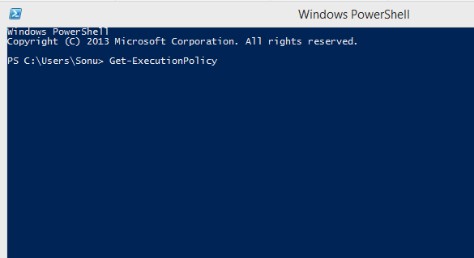
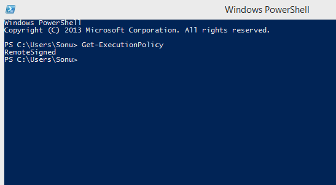
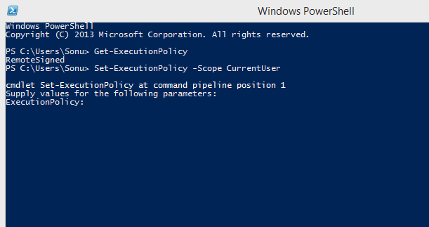

Step 1:
On Command Line Write :Get-ExecutionPolicyE.g. “Restricted” means you cannot run scripts.
 This command will show you your system Execution Policy.
Windows PowerShell does not allow Scripts, Which are not Signed Because it can be dangerous for the system. Even if you download a script from the internet it would not allow it to run because the scripts would not have its certificates.
To Configure your PowerShell to run scripts you write. Following Steps will Configure your PowerShell for execution policy.
Get-ExecutionPolicyGet-ExecutionPolicy -List| Scope | Execution Policy |
| MachinePolicy | Undefined |
| UserPolicy | Undefined |
| Process | Undefined |
| CurrentUser | RemoteSigned |
| Local Machine | AllSigned |
Let's take a quick view of my execution policy.
Now next step is to Set your Execution Policy.
Set-ExecutionPolicy –Scope CurrentUserIn Windows Vista and later versions of Windows, to run commands that change the execution policy for the local computer (the default), start Windows PowerShell with the "Run as administrator" option.
As soon as you will enter above command you will be asked for confirmation.
A. YesNow you would have successfully configred your Windows PowerShell Exection Policy with just two quick easy step.
Applies to PowerShell Version 2.0, 3.0, 4.0